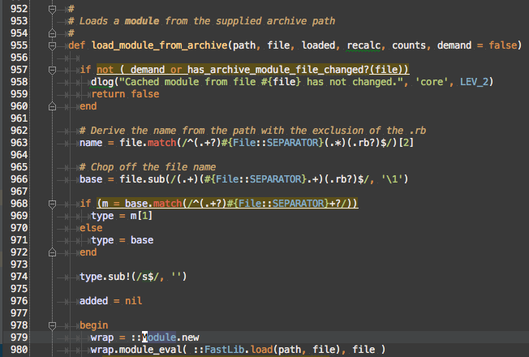

Reading Legacy Code to Harmonize Ruby and Rails Code Loaders
Luke Imhoff
| luke_imhoff@rapid7.com | Kronic.Deth@gmail.com | |
| @limhoff-r7 | @KronicDeth | |
| @KronicDeth |
Background
Code-Loading
Code-Loading in Ruby
-
load -
require -
autoload
load,
require,
autoload
- Search
$LOAD_PATH
load
- File extension must be given
- Will reload already loaded files
- Reads file immediately
require
- File extensions are automatic
- Will not reload already loaded files
- Read file immediately
autoload
- File extensions are automatic
- Will not reload already loaded files
- Read file when constant accessed
# lib/parent.rb
module Parent
autoload :Child, 'parent/child'
end
# lib/parent/child.rb
module Parent::Child
end
Code-Loading in Rails
-
ActiveSupport::Autoload -
ActiveSupport::Dependencies.autoload_paths
ActiveSupport::Autoload
- File pathsare automatic
- Will not reload already loaded files
- Read file when constant accessed
# lib/parent.rb
module Parent
extend ActiveSupport::Autoload
autoload :Child
end
ActiveSupport::Dependencies.autoload_paths
- Specify root directories
- File paths and constants are automatic
- Powers
config.autoload_paths
Code-Loading in Ruby and Rails
| Loader | Extension Required | Loads Only Once | Thread-safe |
|---|---|---|---|
Kernel.load |
Yes | No | No |
Kernel.require |
No | Yes | Yes |
Kernel.autoload |
No | Yes | No (1.9) / Yes (2.0+) |
ActiveSupport::Autoload#autoload |
No | Yes | No (1.9) / Yes (2.0+) |
ActiveSupport::Dependencies#autoload_paths |
No | Either | No |
Setting
- metasploit-framework: 9 years old (5 ruby / 4 perl)
- Metasploit Pro: 2 years old
- Rails 3.2.2: 5 months old
UI
A standard Rails application
prosvc
daemon UI uses to run metasploit-framework
prosvc
it had a few problems
Too long
Duplicating Bundler
Platform-specifics
Emulating config.autoload_paths

Goals
- Eliminate
relative_requiresinprosvc - Eliminate explicit
requires inprosvc - Share
autoload_pathsbetween UI andprosvc
Outline
- Add
config.autoload_pathsoutside Rails - Learn about a new type of code-loading
- Learn about anonymous modules
- Read
ActiveSupport::Dependenciesinternals - Learn about lexical scope
- Learn about constant resolution
config.autoload_paths outside Rails
Barriers to
config.autoload_paths in
prosvc
- Don't know how to use outside of Rails
- Don't know how
config.autoload_pathsworks - Don't know which gem handles
config.autoload_paths
RTF
MG
config.autoload_paths is mentioned in the Configuring guide
Where is
set_autoload_paths?
- Search rubygem.org for rails
- Show all versions
- Find 3.2.2
| Gem | Purpose |
|---|---|
| actionmailer | sending mail |
| activerecord | database records |
| activeresource | non-database records |
| bundler | dependency management |
| actionpack | ? |
| activesupport | ? |
| railties | ? |
Check actionpack, activesupport, and railties
- No Source Links
- Assume rails Source Links

Searching Legacy Code
- Try Github search
- Realize Github search only works on master
- Clone rails
- Checkout 3.2.2
- Search locally
cd ~/git
mkdir rails
cd rails
git clone git@github.com:rails/rails.git
cd rails
git checkout v3.2.2
ack set_autoload_paths
ack
- Like grep, but smarter
- Automatically searches current directory tree
- Ignores .git
- Automatically prints matching lines with line numbers and highlights
ack set_autoload_path
- Configuring guide source
- DSL call to define initializer

railties/lib/rails/engine.rb:536
_all_autoload_paths

-
config.autoload_paths -
config.eager_load_paths -
config.autoload_once_paths
Emulate
set_autoload_paths
-
config.autoload_paths -
config.eager_load_paths -
config.autoload_once_paths
ActiveSupport::Dependencies.autoload_paths.unshift(config.autoload_paths)
Calling initializers without
Rails::Engine
- Initializers are just methods
- Need to emulate calling convention too
Back to the Guide

- Check earlier in file for other initializer
- Check for other initializers with
:before => :set_autoload_paths
set_load_path
_all_load_paths
-
_all_load_paths→_all_autoload_paths -
set_autoload_paths→set_load_paths
prosvc load paths
Separating initializers and configuration
| System | Initializers | Configuration |
|---|---|---|
| Rails |
Rails::Engine
|
Rails::Engine::Configuration
|
| prosvc |
Metasploit::Configured
|
Metasploit::Configuration
|
require 'active_support/concern'
# TODO this should be a Rails::Engine if engine is ever moved under ui
module Metasploit::Configured
extend ActiveSupport::Concern
module ClassMethods
def configuration
@configuration ||= self::Configuration.new
end
def initialize!
configuration.initializers.each do |initializer|
send(initializer)
end
end
def eager_load!
configuration.dependencies.each(&:eager_load!)
# Adapted from Rails::Engine#eager_load!
configuration.eager_load_paths.each do |load_path|
# strip the load_path itself from the name because the load_path is already add to $LOAD_PATH by
# {#set_load_path}.
# strip extension as it's not normally passed to require.
require_path_regex = /\A#{Regexp.escape(load_path)}\/(.*)\.rb\Z/
glob = "#{load_path}/**/*.rb"
Dir.glob(glob) do |path|
require_path = path.sub(require_path_regex, '\1')
require_dependency require_path
end
end
end
def root
configuration.root
end
def set_load_path
configuration.dependencies.each(&:set_load_path)
# reverse because unshift is pushing onto the front
configuration.all_autoload_paths.reverse_each do |path|
if File.directory?(path)
$LOAD_PATH.unshift(path)
end
# uniq at end in case all_autoload_paths include paths already in $LOAD_PATH
$LOAD_PATH.uniq!
end
end
def set_autoload_paths
configuration.dependencies.each(&:set_autoload_paths)
ActiveSupport::Dependencies.autoload_paths.unshift(*configuration.all_autoload_paths)
# Freeze so future modifications error out instead of being silently ignored
configuration.autoload_paths.freeze
configuration.eager_load_paths.freeze
end
end
end
require 'active_support/concern'
module Metasploit::Configured
module ClassMethods
def configuration
@configuration ||= self::Configuration.new
end
end
end
self::Configuration
|
Configuration
|
|---|---|
| Scoped to base class | Scoped to Metasploit::Configured::ClassMethods |
module Metasploit::Configured
module ClassMethods
def initialize!
configuration.initializers.each do |initializer|
send(initializer)
end
end
end
end
- initializers are assumed to be in order
- initializers are assumed to be methods
-
initialize!to match Rails convention
# Load the rails application
require File.expand_path('../application', __FILE__)
# Initialize the rails application
Pro::Application.initialize!
module Metasploit::Configured
module ClassMethods
def eager_load!
configuration.dependencies.each(&:eager_load!)
# Adapted from Rails::Engine#eager_load!
configuration.eager_load_paths.each do |load_path|
# strip the load_path itself from the name because the load_path is
# already add to $LOAD_PATH by {#set_load_path}.
# strip extension as it's not normally passed to require.
require_path_regex = /\A#{Regexp.escape(load_path)}\/(.*)\.rb\Z/
glob = "#{load_path}/**/*.rb"
Dir.glob(glob) do |path|
require_path = path.sub(require_path_regex, '\1')
require_dependency require_path
end
end
end
end
end
module Metasploit::Configured
module ClassMethods
def root
configuration.root
end
end
end
- Allow Metasploit::Pro.root
- Emulate Rails.application.root
module Metasploit::Configured
module ClassMethods
def set_load_path
configuration.dependencies.each(&:set_load_path)
# reverse because unshift is pushing onto the front
configuration.all_autoload_paths.reverse_each do |path|
if File.directory?(path)
$LOAD_PATH.unshift(path)
end
# uniq at end in case all_autoload_paths include paths
# already in $LOAD_PATH
$LOAD_PATH.uniq!
end
end
end
end
module Rails
class Engine < Railtie
def ordered_railties
railties.all + [self]
end
def initializers
initializers = []
ordered_railties.each do |r|
if r == self
initializers += super
else
initializers += r.initializers
end
end
initializers
end
end
end
- There are multiple initializers with same name (one per engine/application)
- Engine initializers are called before application initializers
module Metasploit::Configured
module ClassMethods
def set_load_path
configuration.dependencies.each(&:set_load_path)
# reverse because unshift is pushing onto the front
configuration.all_autoload_paths.reverse_each do |path|
if File.directory?(path)
$LOAD_PATH.unshift(path)
end
# uniq at end in case all_autoload_paths include paths
# already in $LOAD_PATH
$LOAD_PATH.uniq!
end
end
end
end
module Rails
class Engine < Railtie
initializer :set_load_path, :before => :bootstrap_hook do
_all_load_paths.reverse_each do |path|
$LOAD_PATH.unshift(path) if
File.directory?(path)
end
$LOAD_PATH.uniq!
end
end
end
- Engine (dependency) initializer calling is explicit
- Rest is code style differences
module Metasploit
class Configuration
def all_autoload_paths
all_autoload_paths = autoload_paths + eager_load_paths
unique_autoload_paths = all_autoload_paths.uniq
unique_autoload_paths
end
def autoload_paths
@autoload_paths ||= []
end
def dependencies
@dependencies ||= []
end
def eager_load_paths
@eager_load_paths ||= []
end
def initializers
# XXX not sure I like that initializer methods that only exist in
# Metasploit::Configured are used here.
@initializers ||= [
:set_load_path,
:set_autoload_paths,
:eager_load!
]
end
attr_reader :root
end
end
module Metasploit
class Configuration
def initializers
# XXX not sure I like that initializer methods that only exist in
# Metasploit::Configured are used here.
@initializers ||= [
:set_load_path,
:set_autoload_paths,
:eager_load!
]
end
end
end
- No :before
- No :after
- Order is explicit
- Simplified ordering code
Porting prosvc
prosvc requires
#
# Load our own library path and the
standard Metasploit Framework path
#
$:.unshift(File.expand_path(File.join(File.dirname(__FILE__), 'lib')))
$:.unshift(File.expand_path(File.join(File.dirname(__FILE__), '..', 'msf3', 'lib')))
if ENV['RAILS_ENV'] == "development"
$stdout.puts "[!] Starting Pro service in a development environment"
#
# Development mode explicitly enables bundler
#
ENV['BUNDLE_GEMFILE'] = File.expand_path(File.join(File.dirname(__FILE__), '..', 'ui', 'Gemfile'))
ENV['BUNDLE_PATH'] = ENV['GEM_HOME']
require "bundler/setup"
else
#
# Production mode configures the search path via framework's lib/msf/env/gemcache.rb
#
# Accept binary gems from the cache
ENV['MSF_BUNDLE_BINARY_GEMS'] = "1"
require 'msf/env/gemcache'
#
# Explicitly require the libraries we need
#
require 'eventmachine'
require 'nokogiri'
require 'msgpack'
require 'pg'
end
# AuthLogic needed by Mdm::User
require 'authlogic'
# Load gem deps they share
require 'state_machine'
require 'liquid'
require 'acts_as_list'
require 'action_mailer'
require 'carrierwave'
require
'carrierwave/orm/activerecord'
require_relative
'../ui/config/initializers/carrierwave'
#
# Load specific patches for system
libraries
#
if arch == "win32"
require "win32/registry"
require "patches/win32_registry"
end
if arch == "linux32" or arch ==
"linux64"
# require 'openssl_nonblock'
# Expand our maximum file limit as high as it will go
while true
begin; Process.setrlimit(Process::RLIMIT_NOFILE, 32768, 32768); break; rescue ::Exception; end
begin; Process.setrlimit(Process::RLIMIT_NOFILE, 16384, 16384); break; rescue ::Exception; end
begin; Process.setrlimit(Process::RLIMIT_NOFILE, 8192, 8192); break; rescue ::Exception; end
begin; Process.setrlimit(Process::RLIMIT_NOFILE, 4096, 4096); break; rescue ::Exception; end
begin; Process.setrlimit(Process::RLIMIT_NOFILE, 1024, 1024); break; rescue ::Exception; end
break
end
end
#
# Configure the process environment to work with java and other tools
#
pdel = (arch == "win32") ? ";" : ":"
bins = %W{ common/bin ruby/bin
nmap/bin postgresql/bin apache2/bin
java/bin jruby/bin }
pathparts = ENV['PATH'].split(pdel)
bins.each do |bpath|
pathparts.unshift
File.expand_path(File.join(File.dirname(__FILE__), "..", "..", "..", bpath))
end
ENV['PATH'] = pathparts.uniq.join(pdel)
ENV['JAVA_HOME'] = File.expand_path(File.join(File.dirname(__FILE__), "..", "..", "..", 'java'))
ENV['TERMINFO'] = File.expand_path(File.join(File.dirname(__FILE__), "..", "..", "..", 'common', 'share', 'terminfo'))
ENV['DISPLAY'] = nil
# Convert path delimiters for
Windows
if arch == "win32"
ENV['PATH'] = ENV['PATH'].gsub("/", "\\")
ENV['JAVA_HOME'] = ENV['JAVA_HOME'].gsub("/", "\\")
end
#
# Require our basic libraries and start loading
#
require 'metasploit_data_models'
include MetasploitDataModels
# Figure out the rails path
rails_app_path = File.expand_path(File.dirname(__FILE__)) + "/../ui/app"
# Bring all Mdm::* models into view
Dir.glob("#{rails_app_path}/models/mdm/*.rb").each do |mdm_model_path|
require mdm_model_path
end
# ---- BEGIN - Load all things SocialEngineering from Rails ----
module LiquidTemplating; end
liquid_files = Dir.glob("#{rails_app_path}/../lib/liquid_templating/*.rb")
liquid_files.sort.each do |liquid_path|
require liquid_path
end
# TODO: any better way to have both Rails and prosvc happy w/ talking to License?
require "#{rails_app_path}/models/license.rb"
# Declare the module manually - Rails does this from directory structure
module SocialEngineering; end
require "#{rails_app_path}/uploaders/social_engineering/campaign_file_uploader.rb"
manually_loaded_models = ["human_target", "email", "web_page_attack_config_interface"]
skippable_files = ["campaign_task"]
require "#{rails_app_path}/models/social_engineering/human_target.rb"
# avoid chicken-egg
require "#{rails_app_path}/models/social_engineering/web_page_attack_config_interface.rb"
# avoid chicken-egg
se_files = Dir.glob("#{rails_app_path}/models/social_engineering/*.rb")
se_files.sort.each do |se_model_path|
file_name = File.basename(se_model_path).split('.').first
next if skippable_files.include? file_name
next if manually_loaded_models.include? file_name
require se_model_path
end
# ---- END - Load all things SocialEngineering from Rails ----
require 'msf/ui'
require 'rex'
# Metasploit Core API
require 'msf/core/rpc/v10/service'
# Pro API
require 'pro/filters'
require 'pro/config'
require 'pro/rpc/v10/rpc_pro'
# Pro Mixins
require 'pro/mixins'
# Pro Hooks
require 'pro/hooks'
# Pro Client
require 'pro/client'
# Background Daemon
require 'pro/bgdaemon'
# NginX
require "pro/nginx"
#
# This is required to dynamically
load all MDM modules
# since we have namespace classes
which AR tries to log
#
require 'logger'
::FileUtils.mkdir_p(File.expand_path(File.join(File.dirname(__FILE__), "config", "logs")))
ActiveRecord::Base.logger = Logger.new( File.expand_path(File.join(File.dirname(__FILE__), "config", "logs", "db.log" )))
# Load individual namespaces and
models
require_relative "#{rails_app_path}/models/user_session.rb"
require_relative "#{rails_app_path}/models/task_chain.rb"
require_relative "#{rails_app_path}/models/scheduled_task.rb"
require_relative "#{rails_app_path}/models/campaign.rb"
require_relative "#{rails_app_path}/models/attachment.rb"
require_relative "#{rails_app_path}/models/email_template.rb"
require_relative "#{rails_app_path}/models/email_address.rb"
require_relative "#{rails_app_path}/models/web_template.rb"
# Load classes in lib root
ui_lib_path = File.expand_path(File.dirname(__FILE__)) + "/../ui/lib"
require "#{ui_lib_path}/sender.rb"
lib_files = Dir.glob("#{ui_lib_path}/*.rb")
lib_files.sort.each do |lib_class|
require lib_class
end
Roots
- msf3 (metasploit‑framework)
- ui
- engine
module Metasploit::Framework
class Configuration < Metasploit::Configuration
def initialize
@root = Metasploit::Pro.root.join('msf3')
lib_pathname = root.join('lib')
lib_path = lib_pathname.to_s
autoload_paths << lib_path
base_pathname = root.join('lib', 'base')
base_path = base_pathname.to_s
autoload_paths << base_path
end
end
end
module Metasploit::Pro::Engine
class Configuration < Metasploit::Configuration
def initialize
@dependencies = [
Metasploit::Framework,
Metasploit::Pro::UI
]
@root = Metasploit::Pro.root.join('engine')
lib_pathname = root.join('lib')
lib_path = lib_pathname.to_s
autoload_paths << lib_path
end
end
end
module Metasploit::Pro::UI
class Configuration < Metasploit::Configuration
def initialize
@root = Metasploit::Pro.root.join('ui')
lib_pathname = root.join('lib')
lib_path = lib_pathname.to_s
autoload_paths << lib_path
# Some models reference the controllers,
# so app/controllers needs to be added to autoload paths
controllers_pathname = root.join('app', 'controllers')
controllers_path = controllers_pathname.to_s
autoload_paths << controllers_path
uploaders_pathname = root.join('app', 'uploaders')
uploaders_path = uploaders_pathname.to_s
autoload_paths << uploaders_path
models_pathname = root.join('app', 'models')
models_path = models_pathname.to_s
autoload_paths << models_path
end
end
end
Testing with Metasploit Module Loader
A Side Note on Narrative
- I didn't know this use case when I wrote this originally
- I was just restart prosvc over and over for a couple weeks
- Egypt pointed out this use case in the PR
msfpro start-up
- Loads all modules
- Loads all autoload_paths
- Presents prompt
msfpro test
- Loads all modules
- Loads all autoload_paths
- Presents prompt
- Remove autoload_path class constant
- Force reload of autoload_path class
How did I break the code?
- NameError
- Wrong constant name
- Gibberish constant name (#<Module:0x10x916448>)
How do I fix the code?
- Use Call stack (backtrace)
- Look at first line

Where next?
- constantize is pure, so follow arguments up stack

What called const_missing?
- Follow the backtrace
const_missing is implicitly called by Ruby VM when accessing SocialEngineering
Dataflow
namename.presenceklass_nameklass_name.to_sklass_name.to_s.scannesting
Origin of wrong name
- Entire
Module#name - Part of
Module#namecontaining::
To the debugger!
- symlinks prevent ruby-debug-ide breakpoints from triggering
- pry not built for production
- debugger not built for production
print debugging
Namespace Module is wrong
Where is Metasploit3?

Metasploit Module Naming Convention
MetasploitNNisminimum major version of Metasploit Framework
- 1821
Metasploit3classes or modules - 32
Metasploit4classes or modules
Tracking anonymous Module creation
Module.new Usages

Msf::ModuleManager#reload_module
Msf::ModuleManager#load_module_from_file

Msf::ModuleManager#load_module_from_archive

De-anonymizing namespace Modules
Replace Module.new
- The name must be unique to prevent naming collisions
- The name must be deterministic to allow replacement on reload

-
nameis/separated (auxiliary/pro/social_engineering/web_phish) -
String#camelizewill convert/separated toModule#name
>> "auxiliary/pro/social/engineering/web_phish".camelize
=> "Auxiliary::Pro::SocialEngineering::WebPhish"
Why start with Object?
- Object is root of constant names
- Derived from ModuleConstMissing#const_missing

Complications
- Some directories aren't valid constant names
Hex-escaping
- Reversibility preserves uniqueness
- Prefix with 'X' to prevent decimal digits at start of escaped name
Reloading
Walking Down the Tree
Partial existence

Anonymous?! Module Creation
child_namenot passed toModule.new
- Module#name is set on first const_set
- Module#name cannot be reset
| Msf::ModuleManager#load_module_from_file | Named |
| Msf::ModuleManager#load_module_from_archive | Anonymous |
| Msf::ModuleManager#reload_module | Anonymous |
Refactoring to ease understanding
Don't just read the code
One Class/Module per file
- Make code easier to find
- Follows Rails convention for loading

Group related method into included Modules
- Intermediate step before extracting Classes
- Moves ensure no method calling changes required
- Less thorough testing required than extract Class

Categories
- cache (
#cache_entires,#rebuild_cache,#refresh_cache) - creating
Msf::Moduleinstances (#create) - loading (
#demand_load_module,#failed,#has_archive_file_changed?,#has_module_file_changed?,#load_module_from_archive,#load_module_from_file,#load_module_source,#load_modules,#load_modules_from_archive,#load_modules_from_directory,#on_module_load) - module sets (
#auxiliary,#encoders,#exploits,#init_module_set,#module_names,#module_set,#module_types,#nops,#payloads,#post) - module paths (
#add_module_path,#remove_module_path) - reloading (
#reload_module,#reload_modules) - unknown (
#add_module,#auto_subscribe_module,#register_type_extension)
Unknowns
#add_module#auto_subscribe_module#register_type_extension
Msf::ModuleManager#add_module
- Calls
#auto_subscribe_module - Calls
framework.events.on_module_load
Probably loading related...
Called from #on_module_load, so definitely loading
Msf::ModuleManager#register_type_extension

Dead Code?
Only occurrence is def = dead
Extract Modules

Breaking up into Classes
- Common methods for base class
- 2 or more set of methods that follow pattern for subclasses

- Too long (466 lines)
- Too many methods (13)
Horizontal integration
- file_changed? (
#has_archive_file_changed?,#has_module_file_changed?) - load_module (
#add_module,#auto_subscribe_module,#demand_load_module,#failed,#load_module_from_archive,#load_module_from_file,#load_module_source,#on_module_load) - load_modules (
#load_modules,#load_modules_from_archive,#load_modules_from_directory)
Vertical integration
- archive (
#has_archive_file_changed?,#load_module_from_archive,#load_modules_from_archive) - common (
#add_module,#auto_subscribe_module,#demand_load_module,#failed,#load_modules,#on_module_load) - directory (
#has_module_file_changed?,#load_module_from_file,#load_module_source,#load_modules_from_directory)
| Category | |||
|---|---|---|---|
| archive | directory | ||
| Method | #file_changed? |
#has_archive_file_changed? |
#has_module_file_changed? |
#load_module |
#load_module_from_archive |
#load_module_from_file |
|
#load_source |
Fastlib.load |
#load_module_source |
|
#load_modules |
#load_modules_from_archive |
#load_modules_from_directory |
|
Separating extracted class from source class
- Read each method
- If override of source class, keep in source class
- Use Find Usages
- If public interface of source class, keep in source class
- If overridden in extracted class subclasses, move to extracted class
- If helper for extracted class subclasses, move to extracted class